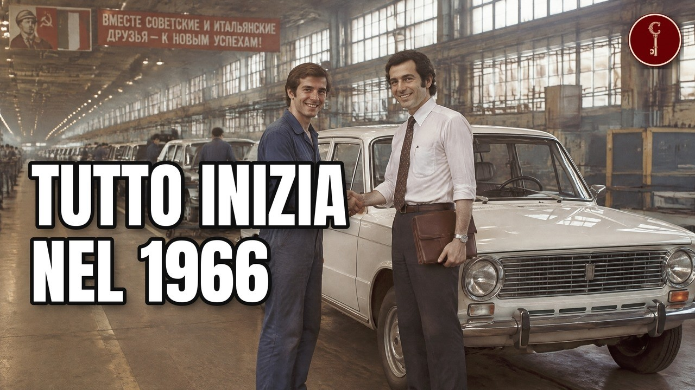

Italia
Perché i Russi amavano l'Italia (e viceversa), e cosa ne resta oggi?

Guarda il video su YouTubeFerragosto 1966: mentre l'Italia è in spiaggia, a Mosca si firma l'accordo che porterà la Fiat sul Volga. Da lì comincia una storia lunga sessant'anni: petrolio e gas, fabbriche e acciaierie, turisti, ville, yacht e squadre di calcio. In questo documentario raccontiamo con i fatti e le fonti perché i russi e gli italiani si sono piaciuti così tanto, quanto si sono comprati a vicenda, cosa è cambiato con la Crimea e con la guerra, e cosa resta oggi.
Le fonti
Le fonti su cui si basa il video.
analisidifesa.it · novembre 2014
Consegnati tutti i Lince per l'esercito russobancaditalia.it · 2014
Questioni di Economia e Finanza n. 220billionaires.africa · 14 novembre 2026
Russian billionaire Andrey Melnichenko's seized yacht leaves Trieste after costing Italy 40 million eurocaroftheyear.org
Edizione 1967cleveland.com · febbraio 2010
Fiat agrees to $3.3 billion joint venturecnn.com · 1 novembre 2026
Italy is spending millions to keep seized Russian superyachts afloatcnn.com · 12 aprile 2022
Nikita Mazepin's properties seized by Italian authoritiescomune.rimini.it
Comune di Rimini, Dichiarazione del sindaco Jamil Sadegholvaad sui dati delle presenzedefenseindustrydaily.com
Russia to Buy Western Lince MRAPseuropean-rubber-journal.com
Pirelli taking legal action over Russia allegationsfirstonline.info
It happened today: 21 August 1964, Togliatti dies in Yaltafirstonline.info
When Fiat went to Soviet Uniongazzetta.it · 4 maggio 2026
Fiat 124-URSS, 60 anni fa l'accordo con l'Unione Sovietica per la Ladaglobaltradealert.org
Russia: President transfers the assets of Ariston Holding and BSH Hausgeräte under Gazprom's administrationhistory.state.gov
Office of the Historian (Dipartimento di Stato USA), Foreign Relations of the United States 1958-1960, vol. VII, parte 2, documento 281history.state.gov
Office of the Historian (Dipartimento di Stato USA), Foreign Relations of the United States 1961-1963, vol. XIII, documento 303ilrestodelcarlino.it
Miracolo stranieri: una primavera d'oro e il sindaco bussa ancora all'aeroportointernazionale.it · 23 settembre 2026
EU faces backlash after lifting sanctions on Russian billionaireslemonde.fr · 22 novembre 1975
M. Leone a été l'objet d'attentions exceptionnelleslipari.istat.it
Statistiche del turismo 1996milanofinanza.it · 22 settembre 2026
Gli oligarchi Usmanov e Fridman rimossi dalla lista nera delle sanzioni Ue contro la Russiarepubblica.it · 13 agosto 2016
50 anni di Togliattigradreuters.com · 5 ottobre 2026
Putin grants approval for UniCredit Russia unit's reorganisation and salesanremo.it
Sanremo, la chiesa russa compie 100 annisanremoliveandlove.it
The Russian Churchsuperyacht24.it · 12 novembre 2026
The Sailing Yacht A is moving to Ancona for a six-month lay-up prior to its refittandfonline.com · 2025
Cold War History (Taylor & Francis), studio sull'accordo sul gas tra Italia e URSSteraz.sk · 1970
Výročie: prvé Žiguli na predaj v ZSSRthedrinksbusiness.com · dicembre 2011
Russian Standard snaps up Ganciathemoscowtimes.com · 26 marzo 2025
Putin cancels nationalization of Italy's Ariston's Russian unittheseus.fi
Analysis and development of the activities of Russian tourists in the Rimini province of Italyvedomosti.ru · 11 dicembre 2015
Козья мордаWikipedia
TransaeroMateriali
Attribuzioni di immagini e video

VAZ 2101 BW 2016-09-03 13-51-58
CC BY-SA 3.0

CC BY-SA 3.0
VAZ 2101. Chilonzor-5, Tashkent, Uzbekistan 01
CC BY-SA 4.0

CC BY-SA 4.0
Fiat 124 Special, Milano
Erremm · CC BY-SA 4.0

Erremm · CC BY-SA 4.0
Town of Togliatti, USSR, 1980
CC BY-SA 4.0

CC BY-SA 4.0
Forte dei Marmi - Pier
CC BY-SA 4.0

CC BY-SA 4.0
Orthodox church Sanremo 2
CC BY-SA 4.0

CC BY-SA 4.0
Bari BW 2016-10-19 11-55-35
CC BY-SA 3.0

CC BY-SA 3.0
La Chiesa Russa Ortodossa di Bari
CC BY 2.0

CC BY 2.0
Supercortemaggiore, Logo
CC BY-SA 4.0

CC BY-SA 4.0
AGIP Leuchtanzeige 2022 Bozen
Bartleby08 · CC BY-SA 4.0

Bartleby08 · CC BY-SA 4.0

Naftoprovid Druzhba 2
CC BY-SA 4.0

CC BY-SA 4.0

Widok na Jałtę ze statku 01
CC BY-SA 4.0

CC BY-SA 4.0
Beach of Cape Fiolent, Crimea
CC BY 4.0

CC BY 4.0

VAZ-2101 (ВАЗ-2101 Жигули) , Tallinn
Pudelek (Marcin Szala) · CC BY-SA 3.0
_,_Tallinn.JPG){kind=link}
Pudelek (Marcin Szala) · CC BY-SA 3.0


Red Square Kremlin Senate 02 (4102644645)
michael clarke stuff · CC BY-SA 2.0
.jpg){kind=link}
michael clarke stuff · CC BY-SA 2.0
La costa di Riccione
CC BY-SA 4.0

CC BY-SA 4.0
Boeing 747-219B, Transaero Airlines JP6350691
CC BY-SA 3.0

CC BY-SA 3.0
Versilia
CC BY-SA 3.0

CC BY-SA 3.0
Forte dei Marmi - Statua Pontile
CC BY-SA 4.0

CC BY-SA 4.0
gromov_1996_duma.jpg
Пресс-служба Государственной Думы Российской Федерации · CC BY 4.0
.jpg){kind=link}
Пресс-служба Государственной Думы Российской Федерации · CC BY 4.0
Aeroporto di Rimini-Miramare-2
CC BY-SA 3.0

CC BY-SA 3.0
Forte Dei Marmi, beach 02
DV · CC BY-SA 3.0

DV · CC BY-SA 3.0
evtusenkov_2011_sistema.jpg
Dyor · CC BY-SA 3.0

Dyor · CC BY-SA 3.0
Porto Cervo Hafen
Superbass · CC BY-SA 3.0

Superbass · CC BY-SA 3.0
Costa Smeralda veduta panoramica 2
CC BY-SA 4.0

CC BY-SA 4.0
usmanov_2013_mondiali-scherma.jpg
Marie-Lan Nguyen · CC BY 3.0

Marie-Lan Nguyen · CC BY 3.0
Berlusconi and Putin in Certosa
Пресс-служба Президента России (kremlin.ru) · CC BY 4.0
Пресс-служба Президента России (kremlin.ru) · CC BY 4.0
Bari - Cupola della Chiesa Russa di San Nicola
CC BY-SA 4.0

CC BY-SA 4.0
Putin at Russian Chapel, Vršič
Kremlin.ru · CC BY 4.0

Kremlin.ru · CC BY 4.0
Bari - Piazza del Ferrarese
CC BY-SA 3.0

CC BY-SA 3.0
napolitano_2009_consegna-chiavi-bari.jpg
Presidential Press and Information Office / Kremlin.ru · CC BY 4.0

Presidential Press and Information Office / Kremlin.ru · CC BY 4.0
Chiesa Russa e San Nicola
Diana Cimino Cocco · CC BY-SA 4.0

Diana Cimino Cocco · CC BY-SA 4.0
Stabilimento Lucchini
CC BY 2.5

CC BY 2.5
mordasov_2011_riunione-sicurezza-miniere.jpg
Premier.gov.ru · CC BY 4.0

Premier.gov.ru · CC BY 4.0

Akademika Sakharova 2 Aug 2009 01
CC BY-SA 3.0

CC BY-SA 3.0
Sede Wind Rho
CC BY-SA 4.0

CC BY-SA 4.0
Canelli stabilimento gancia
CC BY-SA 3.0

CC BY-SA 3.0
Russian Standard Vodka
CC BY-SA 3.0

CC BY-SA 3.0
evtusenkov_2009_vekselberg-deripaska.jpg
Пресс-служба Президента России / Kremlin.ru · CC BY 4.0
.jpg){kind=link}
Пресс-служба Президента России / Kremlin.ru · CC BY 4.0
Fiat 500 in Emilia-Romagna
CC BY-SA 4.0

CC BY-SA 4.0
Sede ENEL Roma
CC BY-SA 4.0

CC BY-SA 4.0
2020 Pirelli headquarters
CC BY-SA 4.0

CC BY-SA 4.0
Vue de Kirov en hiver
bkdrf · CC BY 4.0

bkdrf · CC BY 4.0
Iveco LMV Special Forces
CC BY-SA 4.0

CC BY-SA 4.0

Iveco LMV Lynx photo004
CC BY-SA 4.0

CC BY-SA 4.0
Widok na Jałtę ze statku 04
CC BY-SA 4.0

CC BY-SA 4.0

secin_2016_ritratto-rosneft.jpg
Фото пресс-службы Президента России / Kremlin.ru · CC BY 4.0

Фото пресс-службы Президента России / Kremlin.ru · CC BY 4.0


rotenberg_2020_onorificenza.jpg
Администрация Президента России / Kremlin.ru · CC BY 4.0
.jpg){kind=link}
Администрация Президента России / Kremlin.ru · CC BY 4.0
rotenberg_2013_ordine-amicizia.jpg
Presidential Press and Information Office / Kremlin.ru · CC BY 4.0

Presidential Press and Information Office / Kremlin.ru · CC BY 4.0
Parmigiano Reggiano meules MIN Rungis
CC BY-SA 4.0

CC BY-SA 4.0
capello_2014_austria-russia.jpg
Steindy · CC BY-SA 3.0
.jpg){kind=link}
Steindy · CC BY-SA 3.0
usmanov_2015_incontro-putin.jpg
Пресс-служба Президента России / Kremlin.ru · CC BY 4.0

Пресс-служба Президента России / Kremlin.ru · CC BY 4.0
Map Minor settlement 1992 - Costa smeralda - Touring Club Italiano CART-TEM-060 (cropped)
CC BY-SA 4.0
.jpg){kind=link}
CC BY-SA 4.0

Scheda Wind Tre
CC BY-SA 4.0

CC BY-SA 4.0
HK 中環 Central 皇后大道中 Queen's Road Central Cheung Kong Center facade red flagpoles October 2021 SS2 02
CC BY-SA 4.0

CC BY-SA 4.0
renzi_2015_apertura-giornata-russa-expo.jpg
Пресс-служба Президента Российской Федерации / Kremlin.ru · CC BY 4.0

Пресс-служба Президента Российской Федерации / Kremlin.ru · CC BY 4.0
Rimini Montage
CC BY-SA 3.0

CC BY-SA 3.0
Lady M yacht
CC BY 2.0

CC BY 2.0
Imperia (Ligurien) mit Porto Maurizio und Oneglia rechts
CC BY-SA 3.0 at
_mit_Porto_Maurizio_und_Oneglia_rechts.jpg){kind=link}
CC BY-SA 3.0 at
Sanremo - Portosole
Kent Wang · CC BY-SA 2.0

Kent Wang · CC BY-SA 2.0
Villa Altachiara
CC BY-SA 4.0

CC BY-SA 4.0
Olbia, Portisco (03)
CC BY-SA 4.0
.jpg){kind=link}
CC BY-SA 4.0
ENEL Headquarters Rebuilding
CC BY-SA 4.0

CC BY-SA 4.0
.jpg){kind=link}
_St_Petersburg._Russia.jpg){kind=link}
Avtozavodskiy rayon, Tolyatti, Samarskaya oblast', Russia - panoramio (39)
Svetlov Artem · CC BY 3.0
.jpg){kind=link}
Svetlov Artem · CC BY 3.0
melnicenko_2017_ritratto-mosca.jpg
Maxim Marmur · CC BY-SA 4.0

Maxim Marmur · CC BY-SA 4.0
Esino Lario - chiesa di San Vittore - rosone
CC BY-SA 4.0

CC BY-SA 4.0
Wikimania Esino Lario 2016-06-26 T01
Manfred Werner - Tsui · CC BY-SA 4.0

Manfred Werner - Tsui · CC BY-SA 4.0
Fiat 124 (92845)
Al*from*Lig · CC BY-SA 4.0
.jpg){kind=link}
Al*from*Lig · CC BY-SA 4.0
Chiesa Ortod. Russa Sanremo giardino
CC BY-SA 4.0

CC BY-SA 4.0
Scene ricostruite
Alcune scene sono ricostruite con l'intelligenza artificiale. Non sono documenti né fotografie d'epoca.
Mappe
- Confini amministrativi italiani (openpolis/geojson-italy, dati ISTAT) · CC BY 4.0 · fonte